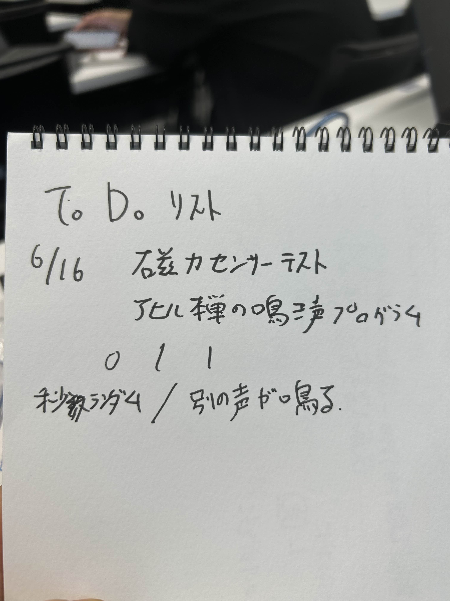

プロジェクトノート
進捗5/20
U5に感銘を受けた14人が集まって世界一のアヒルを作ることになりました。
僕はアヒルを制作する上で音と光を担当する班になりました。
他の班メンバー→るーさん・y.y
とりあえず初週の進捗としては全体の役割分担と今後の軽い見通しを立てたこと。そして、全体でコミュニケーションや情報伝達をスムーズにするための各班のリーダー決めやLINEグループ作成などです。

とりあえず音・光班の計画はこんな感じです。
来週から本格的な作業に取り組むことになると思います。
進捗6/2
今回はHC-06というarduinoをbluetoothで接続できるようになるデバイスを使って、無線接続を試みました。
自分では大分苦戦していましたが道用先生に助力していただいたところ、arduinoのセンサーの数値をPCに送信することに成功しました。(道用先生ありがとうございます)
その後、家で多少試行錯誤しましたが、無事センサーの値に応じて遠隔でmp3ファイルを再生するプログラムが出来ました。(やはり道用先生ありがとうございます)
↓自分用メモ
①aruduinoにはシリアルポートの他に仮想ポートがありbluetooth接続にはこれが使われている
②HC-06が割り当てられているCOMポートはCOM5(変化する可能性あり)
③arduinoを変更する際にはTXとRXをいったん外す必要がある
④RXD-TX、TXD-RX、GND-GND、VCC-抵抗器-5V、抵抗器-センサー-A0、センサー-GND
完成形のコード集
進捗6/9
今週は主に持ち帰って作った遠隔センサーのプログラムの共有と今後の計画(to doリスト)の見直しを行いました。
内の班は仕事がなくなってきている&他の班の仕事がある程度終わらないと次に取り掛かれないので何かさらにこだわるポイントや他の班の手伝える仕事などを見つける必要がありそうです

プロセスメモ
音
■アヒルにどのようにしてスピーカを組み込むか(本体班と要相談)
●音を鳴らすプログラミング作成(本物の生物のようにランダム性を持たせられると良い)
■なにを鳴らすか(鳴き声やBGMなど)
●同線ありにするかワイヤレスにするか
光
■どのようなパターンで光らせるか(そもそも光らせる必要はあるのか)
■光らせるのならどのライトを使うか
願望
■AIと連結させて何かしらのセンサーに対応して生物的な反応を示す事ができればうれしい